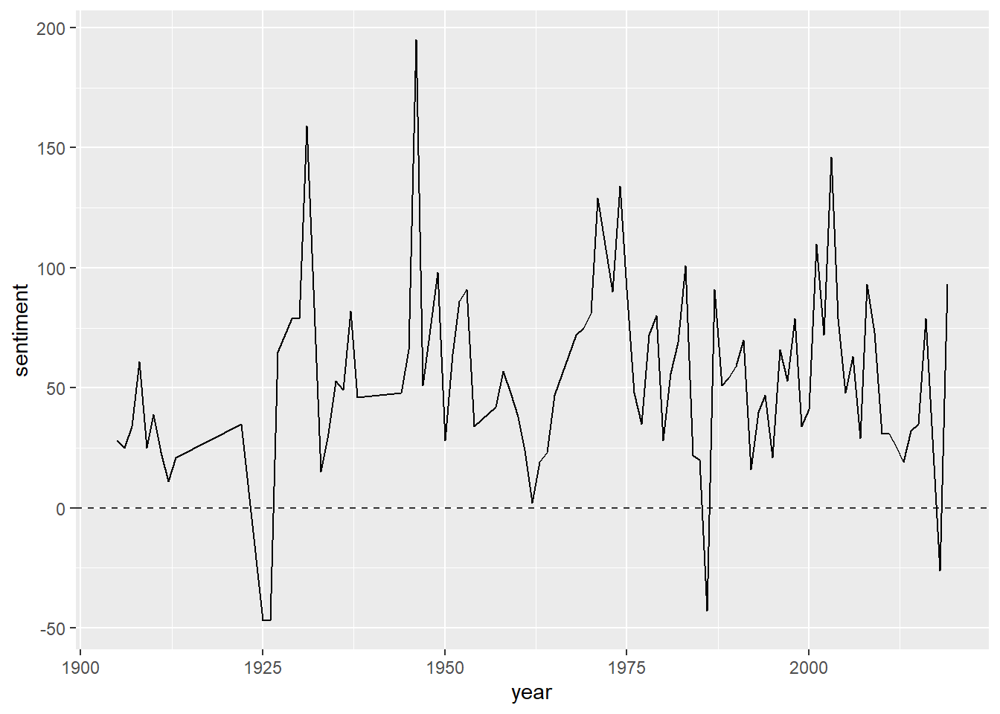
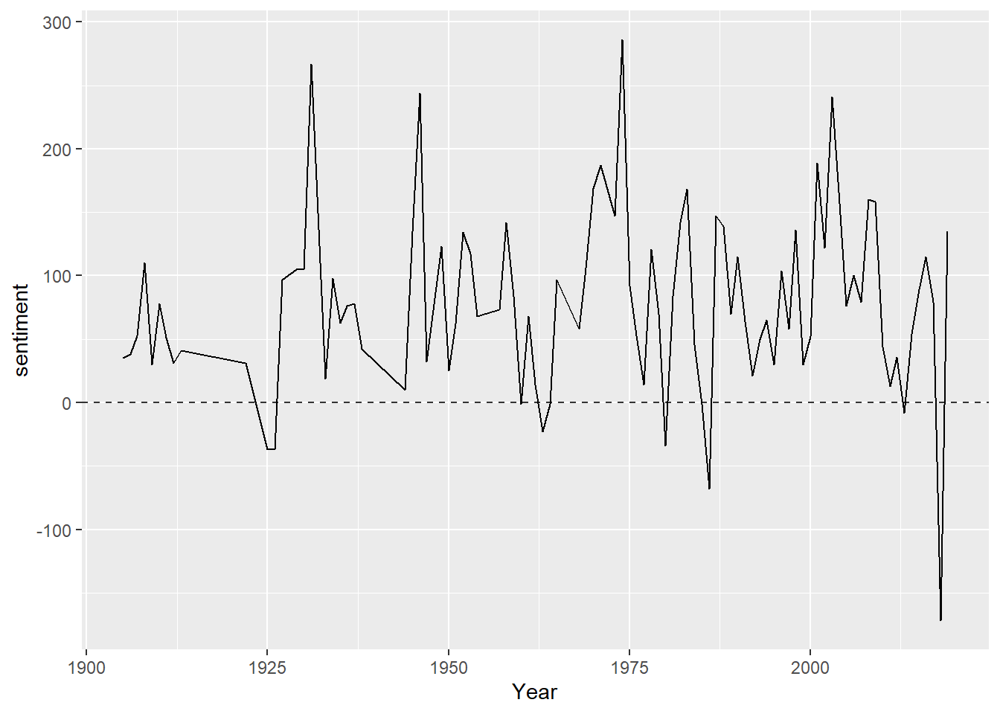
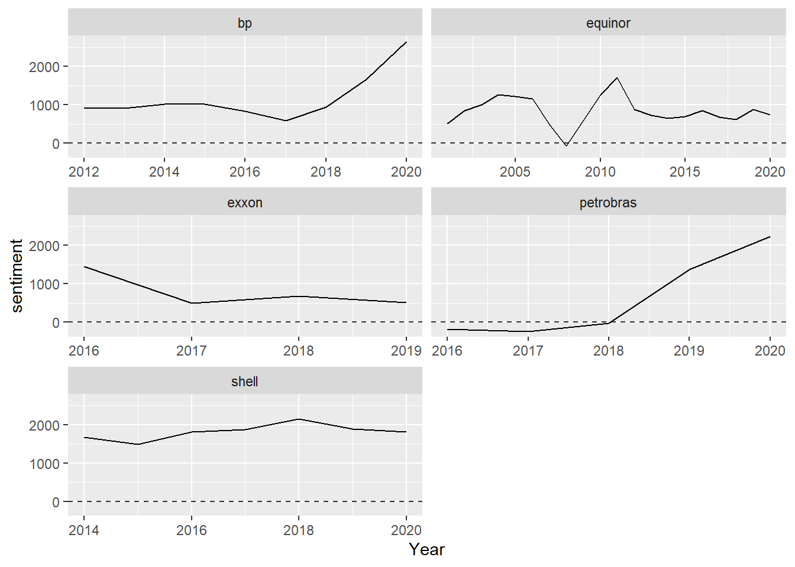
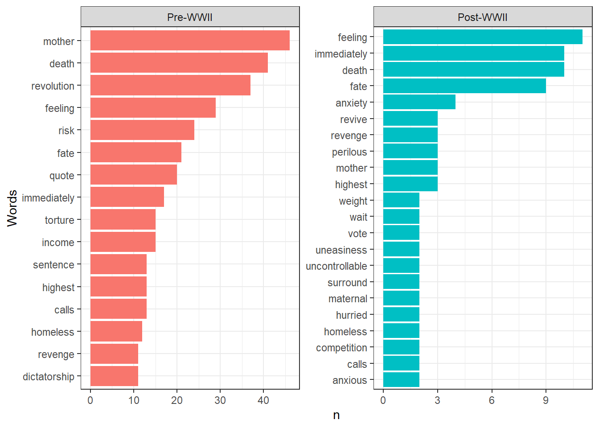
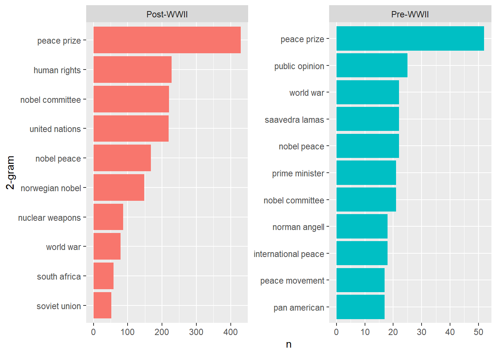

We have now calculated lists of words appearing with top frequency and also seen how to calculate and graph words or phrases of interest across documents. But what if we were interested in seeing highest frequency words within a larger set of words? If were were interested in a limited set of, say, geographical names or people we could just make the list, do a join to remove all other words and calculate top frequencies among this subset of words. But what if we were interested in, say, highest occurring verbs?
For this and many other reasons linguists have long been interested in writing algorithms to automatically identify parts of speech, called part-of-speech tagging or POS. A POS tagger would take a sentence such as “The brown fox jumped over the brown log” and return “The_(article) brown_(adjective) fox_(noun) over_(preposition)” and so on.
One way we could imagine going about this is with a dictionary that identified nouns, verbs, etc. but this is clearly naive – many a word can be both noun and verb and much will depend on context. So we’ll use the openNLP package and write this function1
library(NLP)
library(tm) # load before openNLP
library(openNLP)
library(openNLPmodels.en)
POStagger <- function(text, filter = NULL){
# defining annotators
sent_token_annotator <- Maxent_Sent_Token_Annotator()
word_token_annotator <- Maxent_Word_Token_Annotator()
pos_tag_annotator <- Maxent_POS_Tag_Annotator()
# make sure input is a string
text <- as.String(text)
# defining a pipeline
annotate_text <- NLP::annotate(text, Annotator_Pipeline(
sent_token_annotator,
word_token_annotator,
pos_tag_annotator
))
# generate tags
tags <- sapply(subset(annotate_text, type=="word")$features, `[[`, "POS")
# get tokens
tokens <- text[subset(annotate_text, type=="word")]
# filter out just one pos type
if (!is.null(filter)) {
tagged <- tokens[tags %in% filter]
} else {
# put tokens and pos tags in df
tagged <- tibble(word=tokens, pos=tags) %>%
filter(!str_detect(pos, pattern='[[:punct:]]'))}
return(tagged)
}
nobel <- read_rds("data/nobel_cleaned.Rds")
POStagger(nobel$text[1])This yields a nice dataframe with tokens in the first column and POS in the second column. The POS are not just “noun,” “verb” and so on but more finely differentiated. See here for a list of abbreviations. Using the same filter, group_by, etc methods we can now find lists of most frequently words by type of speech. There are, of course, other applications we might imagine when POS-tagging is used in conjunction with other topics discussed in the workshop.
You don’t really need to worry about what’s in there but that it takes a character string (preferably cleaned, as always, to limit the chance of unexpected errors). Note, too, that the function has the option of specifying a filter that will return a string of words of a certain POS.
Another commonly done sort of analysis that we can easily incorporate into our tidy workflow is that of sentiment analysis. There are numerous ways computational linguists have developed to algorithmically determine the “sentiment” of a piece of text. We focus here on a simple (and fairly naive) method that works on the level of individual words and employs a sentiment dictionary, essentially a list of words and their associated sentiments. As we will see, these same dictionary methods can also be applied to any list or lists of words and thus give analysts a more flexible tool to track vocabulary across a corpus.
tidytext includes three dictionaries, each working slightly differently.2 Let’s take a look below.
library(tidytext)
# the first time you will need to say yes to download of the sentiment dictionary
get_sentiments("afinn")## # A tibble: 2,477 x 2
## word value
## <chr> <dbl>
## 1 abandon -2
## 2 abandoned -2
## 3 abandons -2
## 4 abducted -2
## 5 abduction -2
## 6 abductions -2
## 7 abhor -3
## 8 abhorred -3
## 9 abhorrent -3
## 10 abhors -3
## # ... with 2,467 more rowstail(get_sentiments("afinn"))## # A tibble: 6 x 2
## word value
## <chr> <dbl>
## 1 youthful 2
## 2 yucky -2
## 3 yummy 3
## 4 zealot -2
## 5 zealots -2
## 6 zealous 2Here we have negative or positive sentiment (words beginning with “ab-” seem to be quite negative!). If we want to get a quick overview of the scale we can call either table() or summary()
table(get_sentiments("afinn")$value) # for categorical data, tells us categories and n of those categories##
## -5 -4 -3 -2 -1 0 1 2 3 4 5
## 16 43 264 966 309 1 208 448 172 45 5summary(get_sentiments("afinn")$value) # summary statistics for the value column ## Min. 1st Qu. Median Mean 3rd Qu. Max.
## -5.0000 -2.0000 -2.0000 -0.5894 2.0000 5.0000So we see the value of sentiments goes from -5 to 5. Calling the other two:
get_sentiments("bing")## # A tibble: 6,786 x 2
## word sentiment
## <chr> <chr>
## 1 2-faces negative
## 2 abnormal negative
## 3 abolish negative
## 4 abominable negative
## 5 abominably negative
## 6 abominate negative
## 7 abomination negative
## 8 abort negative
## 9 aborted negative
## 10 aborts negative
## # ... with 6,776 more rowsget_sentiments("nrc")## # A tibble: 13,875 x 2
## word sentiment
## <chr> <chr>
## 1 abacus trust
## 2 abandon fear
## 3 abandon negative
## 4 abandon sadness
## 5 abandoned anger
## 6 abandoned fear
## 7 abandoned negative
## 8 abandoned sadness
## 9 abandonment anger
## 10 abandonment fear
## # ... with 13,865 more rows“Bing” labels words simply negative or positive and the “nrc” lexicon labels them according to a handful of main emotions. You can take a look at the tidytext documentation for more background on the lexicons.3
So what do we do with these? The simplest method is simply to count words from the lexicons that appear in a text and add them all up. This is what is known as a dictionary method, which we’ll talk about in a little more depth below. From a practical standpoint, how do we add up all dictionary words in a text? Tidy makes this pretty easy. You’ll see the code is a little bit different based on the kind of dictionary.
For the bing dictionary we will tokenize our corpus, do an inner join4 with the sentiments dictionary which will create a new row in our Nobel corpus dataframe where every row is the associated sentiment with the corpus word and corpus words that do not have a sentiment associated with them in the bing dictionary will be eliminated from the dataframe. We then do a pivot_wider, the opposite of pivot_longer which we did in the previous session when graphing n-grams. pivot_wider will make several columns out of fewer – here taking the values of the sentiment column (“positive” and “negative”) and making them column titles and populating the column values with those from the associated rows of our n column. Take a look at what the dataframe looks like before and after transformation to make sure you understand what is happening. We do this pivot in order to then be able to do basic arithmetic – take the number of “positive” word frequencies and subtract the number of negative word frequencies, and do this for every document in the corpus. This will be our sentiment “score.” It is then a fairly straightforward path to graphing it on ggplot.
library(tidyverse)
nobel <- read_rds("data/nobel_cleaned.Rds")
# calculating text sentiment by subtracting total positive sentiment words from total negative with bing lexicon
nobel %>%
unnest_tokens(word, AwardSpeech) %>% ## we call our new column "word" which makes inner_joins easier
inner_join(get_sentiments("bing")) %>%
count(sentiment, year = Year) %>%
pivot_wider(names_from = sentiment, values_from = n, values_fill = 0) %>%
mutate(sentiment = positive - negative) %>%
ggplot(aes(year, sentiment)) +
geom_line(show.legend = FALSE) +
geom_hline(yintercept = 0, linetype = 2, alpha = .8)
With the afinn corpus we have numeric “sentiment values” attached to words so we need to sum all the values of all words in each document.
# using the afinn lexicon
nobel %>%
unnest_tokens(word, AwardSpeech) %>% ## we call our new column "word" which makes inner_joins easier
inner_join(get_sentiments("afinn")) %>%
group_by(Year) %>%
summarize(sentiment = sum(value)) %>%
ggplot(aes(Year, sentiment)) +
geom_line(show.legend = FALSE) +
geom_hline(yintercept = 0, linetype = 2, alpha = .8)
We can also do this over different categories over years. For instance, say we’d like to do this same kind of chart but for each of our oil company’s sustainability reports.
sr <- srps <- read_csv("data/srps.csv")##
## -- Column specification --------------------------------------------------------
## cols(
## Text = col_character(),
## Year = col_double(),
## Company = col_character()
## )sr %>%
unnest_tokens(word, Text) %>% ## we call our new column "word" which makes inner_joins easier
inner_join(get_sentiments("afinn")) %>%
group_by(Company, Year) %>%
summarize(sentiment = sum(value)) %>%
ggplot(aes(Year, sentiment)) +
geom_line(show.legend = FALSE) +
geom_hline(yintercept = 0, linetype = 2, alpha = .8) +
facet_wrap(~Company, ncol = 2, scales = "free_x")## Joining, by = "word"## `summarise()` has grouped output by 'Company'. You can override using the `.groups` argument.
We can also use the sentiment lexicons in ways that mostly combine what we have already done in subsetting dataframes and counting words. Say we’d like to see which words in a certain category of documents are associated with negative anticipation in the pre-WWII vs post-WWII Nobel prize award speeches. We’ll do this in several steps.
First we get a dictionary of the words associated with anticipation. Then do the same with negative sentiment words. Then we again do an inner_join() that creates a new dataframe that includes only those words present in both anticipation and negative.
anticipation <- get_sentiments("nrc") %>%
filter(sentiment == "anticipation")
negative <- get_sentiments("nrc") %>%
filter(sentiment == "negative")
negAnt <- inner_join(anticipation, negative, by="word") %>%
select(word) # we don't really need the other two columns which tell us that they are negative and anticipation wordsNow we make our Nobel data “tidy” (one-token-per-row) and do another inner_join() with our negative anticipation words. What we have left are all negative anticipation words in the corpus, which we can then print.
nobel %>%
mutate(Period = ifelse(Year >= 1945, "Pre-WWII", "Post-WWII")) %>%
mutate(Period = factor(Period, levels = c("Pre-WWII", "Post-WWII"))) %>% # CHanges
unnest_tokens(word, AwardSpeech) %>%
inner_join(negAnt) %>%
group_by(Period) %>%
count(word, sort = TRUE) %>%
slice_max(order_by=n, n = 15) %>% # selecting to show only top 15 words within each group
ggplot(aes(reorder_within(x = word, by = n, within = Period), n, fill = Period)) + # reordering is a bit tricky, see ?reorder_within()
geom_col(show.legend = FALSE) +
scale_x_reordered() +
coord_flip() +
facet_wrap(~Period, ncol = 2, scales = "free") +
theme_bw() +
xlab('Words')## Joining, by = "word"
Wait, “mother” is a word associated with both negativity and anticipation?
get_sentiments("nrc") %>%
filter(word == "mother")## # A tibble: 6 x 2
## word sentiment
## <chr> <chr>
## 1 mother anticipation
## 2 mother joy
## 3 mother negative
## 4 mother positive
## 5 mother sadness
## 6 mother trustApparently so, according to this lexicon. Which offers us a nice segue into a larger discussion of dictionaries.
It is entirely obvious to historians that the meaning of words – not to mention latent sentiments – changes over time, place, and context within individual documents. So these methods have to be used with care. To take one instance, economists have noticed that words like “liability” have very different sentiment and latent connotations in finance and other areas of life (Loughran and Mcdonald (2011)). Thus it might behoove us to create our own dictionaries and this is something we could easily do. In this case, we (as domain experts) could compile our own dictionaries not only to judge sentiment, but to measure attention given to certain topics, tone of discussion,
Here really the only challenge is to read a dictionary into R and then use it per the above methods. Say that we have a list of words in a text file, not comma-separated, that is a dictionary for identifying when the theme of oil is brought up in a text (this is something I came up with in literally 5 seconds, please do not use this for anything – actual dictionaries should be considerably better thought out, as well as verified on real texts that it’s catching what you want it to). Each word is on its own separate line (coincidentally this is the format of the above cited Norwegian sentiment dictionary, so should you want to use that you can adopt the process here.)
oil_dict <- read_lines("data/oil_theme.txt")
oil_dict <- tibble(word = oil_dict, dictionary = "oil dictionary")
oil_dict %>%
filter(word != "")## # A tibble: 6 x 2
## word dictionary
## <chr> <chr>
## 1 oil oil dictionary
## 2 petrol oil dictionary
## 3 petroleum oil dictionary
## 4 gas oil dictionary
## 5 tanker oil dictionary
## 6 fossil oil dictionaryIn all of two lines of code we’ve made it into a tibble. We can see also we have an empty string as the last line. We take care of that and then we’re all set to use this dictionary. Now if we want to add up everytime a text uses a word in this dictionary we can easily do this.
In Google’s famous n-grams viewer, you can search not just for a single word but for phrases, sets of words “n” tokens long. Indeed, this is why it is called an “n”-gram, they are consecutive sequences of an arbitrary number of words. So far we’ve only been looking at individual words, so lets think about multi-word units.
True to form, the tidyverse will help out with this, allowing us to unnest_tokens() by the n-gram by telling R that our token of interest is now not the single word but an ngram of n length.
nobel %>%
unnest_tokens(twogram, AwardSpeech, token = "ngrams", n = 2)## # A tibble: 234,267 x 3
## Year Laureate twogram
## <dbl> <chr> <chr>
## 1 1905 Bertha von Suttner on behalf
## 2 1905 Bertha von Suttner behalf of
## 3 1905 Bertha von Suttner of the
## 4 1905 Bertha von Suttner the nobel
## 5 1905 Bertha von Suttner nobel committee
## 6 1905 Bertha von Suttner committee bjørnstjerne
## 7 1905 Bertha von Suttner bjørnstjerne bjørnson
## 8 1905 Bertha von Suttner bjørnson introduced
## 9 1905 Bertha von Suttner introduced the
## 10 1905 Bertha von Suttner the speaker
## # ... with 234,257 more rowsAnd we could then make a plot of the most frequently occurring 2-grams. The problem with this is that we’re going to be overrun with stopwords, but now that we have bigrams how to do take the individual stop words? We could search and remove with str_remove_all without unnesting words, we could unnest, take out the stop words, renest and then unnest by 2-grams, but we could also use a more tidy approach and separate() which is another handy command for manipulating tidyverse dataframes.
nobel %>%
unnest_tokens(twogram, AwardSpeech, token = "ngrams", n = 2) %>%
separate(twogram, into=c("word1", "word2"), sep = " ") # here the call states what col to separate, into which columns, and where the separation should be made, here when there is a space between the words## # A tibble: 234,267 x 4
## Year Laureate word1 word2
## <dbl> <chr> <chr> <chr>
## 1 1905 Bertha von Suttner on behalf
## 2 1905 Bertha von Suttner behalf of
## 3 1905 Bertha von Suttner of the
## 4 1905 Bertha von Suttner the nobel
## 5 1905 Bertha von Suttner nobel committee
## 6 1905 Bertha von Suttner committee bjørnstjerne
## 7 1905 Bertha von Suttner bjørnstjerne bjørnson
## 8 1905 Bertha von Suttner bjørnson introduced
## 9 1905 Bertha von Suttner introduced the
## 10 1905 Bertha von Suttner the speaker
## # ... with 234,257 more rowsNow we can do our stopword work. We could do an anti_join on word1 and then word2 but the other nifty thing we can do with tidy commands is use the %in% command (this being the syntax of commands used in SQL databases some of which the tidyverse lets you do).
nob <- nobel %>%
mutate(Period = ifelse(Year <= 1945, "Pre-WWII", "Post-WWII")) %>%
unnest_tokens(twogram, AwardSpeech, token = "ngrams", n = 2) %>%
separate(twogram, into=c("word1", "word2"), sep = " ") %>%
filter(!word1 %in% stop_words$word) %>%
filter(!word2 %in% stop_words$word) %>%
unite(twogram, word1, word2, sep = ' ') %>% # now putting word1 and word2 back into a single column called twogram
group_by(Period) %>%
count(twogram, sort=TRUE) %>%
slice_max(order_by=n, n = 10)
nob %>%
mutate(twogram = reorder(twogram, n)) %>%
ungroup() %>%
ggplot(aes(reorder_within(x = twogram, by = n, within = Period), n, fill = Period)) +
geom_col(show.legend = FALSE) +
scale_x_reordered() +
coord_flip() +
facet_wrap(~Period, ncol = 2, scales = "free") +
ylab('n') +
xlab("2-gram")
Words can also co-occur in the same context even if they are not necessarily right next to each other. To get at this we’ll need more than n-grams. One way to do this is the widyr package, which essentially restructures our tidy data does an operation and the recasts it back into a tidy format.5
For instance, we can use the pairwise_count() function to find all the words that appear together in the same Nobel speech (not necessarily right next to each other).
library(widyr)
nobel %>%
unnest_tokens(word, AwardSpeech) %>%
filter(!word %in% stop_words$word) %>%
pairwise_count(word, Year, sort = TRUE)## Warning: `distinct_()` was deprecated in dplyr 0.7.0.
## Please use `distinct()` instead.
## See vignette('programming') for more help## Warning: `tbl_df()` was deprecated in dplyr 1.0.0.
## Please use `tibble::as_tibble()` instead.## # A tibble: 22,374,876 x 3
## item1 item2 n
## <chr> <chr> <dbl>
## 1 time peace 89
## 2 peace time 89
## 3 prize peace 86
## 4 peace prize 86
## 5 peace nobel 85
## 6 nobel peace 85
## 7 war peace 85
## 8 world peace 85
## 9 peace war 85
## 10 peace world 85
## # ... with 22,374,866 more rowsNotice that this is a much larger dataframe – our unnested dataframe minus stopwords was ~93.000 words, this new one is +21 million.
From here we might do many things using the same skills of subsetting, counting, and plotting we have talked to up to now. We filter for words co-occurring with “evil” and plot the most frequently occurring in the same document as “evil.” We might also note that unnest_tokens() will can also tokenize by sentence. This means that if you wanted to look at co-occurrence within sentences you could tokenize by sentence and give each sentance (which would occupy one row each) an index number (something like mutate(index = row_number()) might do the trick) and then call pairwise_count.
Based on examples from Clark (2018), Schweinberger (2021), and especially Niekler and Wiedemann (2020).↩︎
these are English-language, it should be said. There are many for other languages out there, see here for an extensive Norwegian positive/negative sentiment dictionary. Some of these will involve a little wrangling of the data to read into R and get them into tidy format.↩︎
For some discussion of the nrc lexicon and more background on sentiment analysis, see chapter 20 in Jurafsky and Martin (forthcoming). One of the earliest and best known sentiment dictionaries is the General Inquirer.↩︎
See chapter 13 in Wickham and Grolemund (2016) for great visualizations of joins and translation into R commands.↩︎
There are simple statistics to test the correlation between words in the same document (phi-test – in widyr as pairwise_corr), statistics to measure differences in word use between documents (log-likelihood, chi-squared, keyness), and so on. These are a bit much to cover in a two day workshop but area all fairly easy to implement in R and you can easily find tutorials and explainers that will help you do this.↩︎